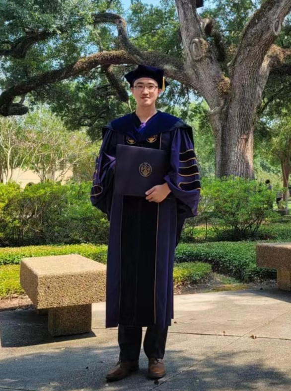

Welcome to Shaopan Guo's Homepage!
Genius is patience. - Isaac Newton

News
[08/29/2025] Welcome Xiaoyu Wang from Taiyuan University of Technology to join my group as a master student.
[08/26/2025] Dr. Guo visited Nanjing Transportation Investment Group Changrun Innovation Base.
[08/15/2025] Dr. Guo's research project "Research on Data-Event Co-Driven Control Theories and Methods for Multi-Agent Systems" has received funding from the Basic Science (Natural Science) Research Project of Higher Education Institutions in Jiangsu Province.
[07/10/2025] Congratulations to BaiWenjie Zheng for his paper being accepted by the 17th International Conference on Information and Automation!
[06/30/2025] Congratulations to BaiWenjie Zheng for his paper being accepted by the 2025 IEEE International Conference on Systems, Man, and Cybernetics (SMC)!
[06/30/2025] Congratulations to Zhikai Yang for his paper being accepted by the 2025 IEEE International Conference on Systems, Man, and Cybernetics (SMC)!
[05/19/2025] Congratulations to Zhikai Yang for being invited to give a talk at the Annual Meeting of Young Scientists of the Chinese Society of Automation! His topic is "A Periodic Reordering Algorithm for Extending Truck Mileage."
[04/03/2025] The paper "Optimal Resequencing of Connected and Autonomous Electric Vehicles in Battery SOC-Aware Platooning" by Shaopan Guo and Xiangyu Meng has been accepted for publication in the IEEE Transactions on Transportation Electrification.
[04/17/2025] Dr. Guo has been invited to be a Judge at the 2025 Graduate Science and Technology Forum of School of Computer and Information Engineering (School of Artificial Intelligence), Nanjing University of Technology.
[04/01/2025] Welcome BaiWenjie Zheng join my group as an undergraduate researcher. BaiWenjie Zhen is a 2022 undergraduate student majoring in embeded systems.
[01/20/2025] Dr. Guo attended the Peking University Nanjing Alumni Association New Year Forum.
[01/11/2025] Dr. Guo attended the Harbin Institute of Technology Jiangsu Province Electrical Industry Alumni Exchange Meeting.
[11/14/2024] Congratulations to Yaofei Ma for winning the third prize in the School of Pharmacy Undergraduate Science and Technology Forum and College Student Innovation and Entrepreneurship Project!
[11/01/2024] Congratulations to Zhikai Yang for winning the third prize in the Global Artificial Intelligence Algorithm Elite Competition (Jiangsu Division)!
[07/24/2024] Thank Professor Li Dongyu from Beihang University for his excellent report on Time Synchronization Control Methods and Their Applications in Unmanned Systems!
[07/16/2024] Dr. Guo went to Luliang to give a lecture on artificial intelligence for the State Grid Shanxi Branch.
[10/14/2024] Dr. Guo's research project "Research on Multi-Agent System Control Theory and Applications under the Condition of Time Information Loss" has received funding from the Nanjing Overseas Scholars' Science and Technology Innovation Program.
[06/30/2024] The paper "Optimal Re-Sequencing of Electric Vehicle Platoons Based on Deep Reinforcement Learning" by M. Liu, C. Peng, S. Guo*, L. Xiao, B. Shi and Y. Peng has been accepted for presentation at the 2024 IEEE International Conference on Systems, Man, and Cybernetics (SMC) held in Kuching, Malaysia.
[06/06/2024] Dr. Guo visited Bozhi Security Technology Co., Ltd.
[06/04/2024] Dr. Guo visited Professor Zhan Xiaohong and his research group at Nanjing University of Aeronautics and Astronautics.
[05/01/2024] Welcome Zhikai Yang and Yaofei Ma join my group as undergraduate researchers. Both of them are 2023 undergraduate students majoring in computer science.
[12/10/2023] Dr. Guo visited the Purple Mountain Laboratories with the School of Computer Science and Information Engineering at Nanjing Tech University.
[11/17/2023] Dr. Guo was honored to be invited by the Administrative Office of the School of Computer and Information Engineering at Nanjing Tech University to give a speech as a representative of new teachers during the Quality Development Activities on November 17, 2023.
[11/14/2023] Dr. Guo has been invited by the Student Affairs Office of the School of Computer and Information Engineering at Nanjing Tech University to deliver a lecture to undergraduate students, exploring the intricacies of "Multi-agent Systems: Concepts, Coordination Control, and Applications." The lecture is scheduled for November 14, 2023, at 18:30 and will take place in Chongde Building A, Room 505.
Research Interests
Multi-agent systems, event-triggered control, connected and automated vehicles, smart transportation, and deep reinforcement learning.
Education
- Doctor of Philosophy in Electrical and Computer Engineering, Louisiana State University, Baton Rouge, United States, Aug. 2019-May 2023
- Master of Science in Mechanical Systems and Control, Peking University, Beijing, China, Aug. 2016-Jul. 2019
- Bachelor of Engineering in Automation, Harbin Institute of Technology, Harbin, China, Aug. 2012-Jul. 2016
- CSC Visiting Student in Electrical Engineering, Queen's University Belfast, Belfast, United Kingdom, Jan. 2015-Jul. 2015
Publications
- S. Guo and X. Meng*, “Fully Distributed Control of Multi-Agent Networks with Edge-based Event-Triggered Communication", IEEE Transactions on Automatic Control, vol. 68, no. 9, 2023, pp. 5630-5637.
- S. Guo and X. Meng*, "Optimal Resequencing of Connected and Autonomous Electric Vehicles in Battery SOC-Aware Platooning," in IEEE Transactions on Transportation Electrification, vol. 11, no. 4, 2025, pp. 9298-9305.
- S. Guo, Z. Li, Y. Niu, and L. Wu*,“Consensus Disturbance Rejection Control of Directed Multi-agent Systems with Extended State Observer," Chinese Journal of Aeronautics}, vol. 33, no. 5, 2020, pp. 1486-1493.
- S. Guo, X. Meng*, and M. Farasat,“Energy Efficient and Battery SOC-aware Coordinated Control of Connected and Autonomous Electric Vehicles", 2022 American Control Conference (ACC), 2022, pp. 4707-4712.
- S. Guo, X. Meng*, and B. Du,“Fully Distributed Event-Triggered Consensus of Double-Integrator Multi-Agent Systems”, 2021 60th IEEE Conference on Decision and Control (CDC), 2021, pp. 6665-6670.
- S. Guo, X. Meng* and X. Sun, “Consensus Control of High-Order Multi-Agent Systems with Delayed Feedback and Matched Disturbances," 2021 American Control Conference (ACC)}, 2021, pp. 4729-4734.
- S. Guo and Z. Li*,“Fully Distributed Consensus Control for Nonlinear Multi-agent Network with Extended State Observer," 2018 37th Chinese Control Conference (CCC)}, 2018, pp. 7199-7204.
- M. Liu, C. Peng, S. Guo*, L. Xiao, B. Shi and Y. Peng, "Optimal Re-Sequencing of Electric Vehicle Platoons Based on Deep Reinforcement Learning," 2024 IEEE International Conference on Systems, Man, and Cybernetics (SMC), Kuching, Malaysia, 2024, pp. 4250-4255.
- L. Xie, M. Liu, L. Xiao and S. Guo, "Integrating LSTM-Based Target Prediction with TD3 for Enhanced UAV Pursuit-Evasion," 2024 China Automation Congress (CAC), Qingdao, China, 2024, pp. 3541-3546.
- L. Xiao, M. Liu, X. Wu, S. Guo, B. Shi and W. Ci, "Optimal Control of Constrained Trajectory Optimization Problem of UAV with Limited Sensing," 2024 China Automation Congress (CAC), Qingdao, China, 2024, pp. 716-721.
Funding
Basic Science (Natural Science) Research Project of Higher Education Institutions in Jiangsu Province 江苏省高等学校基础科学（自然科学）研究项目 （A类）
Nanjing Overseas Scholars' Science and Technology Innovation Program 南京市留学人员科技创新择优资助项目（C类）
Teaching
Computer Networks (English)
Computer Networks (Chinese)
Deep Learning Application Technology (Chinese)